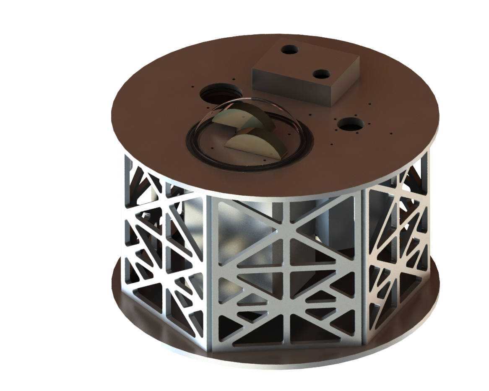
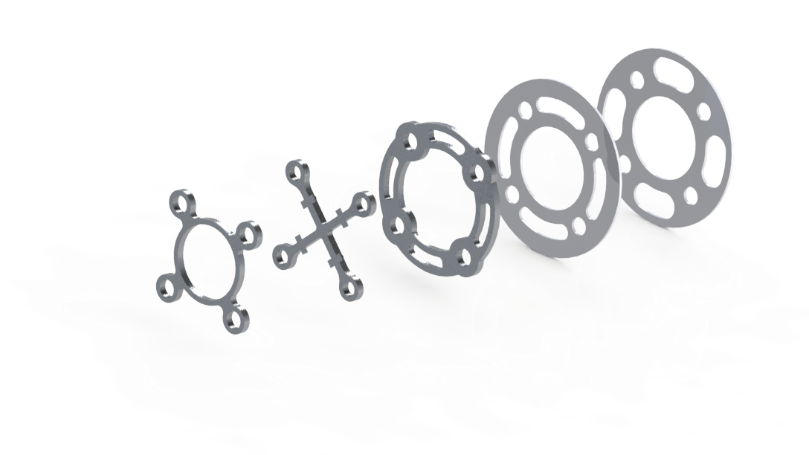

VENUS MISSION
OVERVIEW
| PURPOSE | Design a vehicle and payload for a hypothetical in-situ atmospheric mission on Venus. | |
|---|---|---|
| DESCRIPTION | In its stowed configuration, the vehicle is an aluminum cylinder with a heat shield and backshell. The vehicle carries the payload, supporting systems, and consumables, along with a polyester and nylon parachute and superpressure helium balloon made of teflon cloth matrix used for descent and altitdue control throughout the mission. | |
| TIMELINE | January - April 2021 | |
| TOOLS | SolidWorks | |
| MANUFACTURING PLAN | Friction Welding, Precision Milling |

REGENERATIVE BRAKING
OVERVIEW
| PURPOSE | Ideate and design a friction-based braking system that converts the kinetic energy of wheels into energy used to power or charge small appliances and gadgets through an external charging circuit. | |
|---|---|---|
| DESCRIPTION | While regenerative braking is common in electric vehicles, this concept explores the possibility of an add-on system for combustion bikes and mopeds in developing countries. This ratchet system engages when any pressure is applied to the brake pedal. | |
| TIMELINE | July 2020 (1 month) | |
| TOOLS | SolidWorks | |
| MANUFACTURING PLAN | Lasercutter |
JUMBO LED GAME
OVERVIEW
| PURPOSE | Design a case for a hand-held video game ideated during the capstone project in Art of Engineering. |
|---|---|
| DESCRIPTION | Our "LED screen" for games allows users to play a pixelized version of Flappy Bird using a laser distance sensor. |
| TIMELINE | March-April 2020 (2 months) |
| TOOLS | SolidWorks |
| MANUFACTURING PLAN | Lasercutter, Ultimaker 3D Printer |
WATERPROOF COMPARTMENT
OVERVIEW
| PURPOSE | Design a waterproof, modular tube to house the electronics of the Columbia University Robotics Club MATE ROV. | |
|---|---|---|
| DESCRIPTION | This compartment is made of store-bought acrylic tube and 3D printed end-caps secured by screws and made watertight using o-rings. | |
| ITERATIONS | Initially, the team secured 3D printed end-caps with flanges using long headless bolts, but this caused bending between secured points and released water into the tube. Although modular, this design did not allow for frequent servicability of the electronics inside. | |
| TIMELINE | January-March 2020 (3 months) | |
| TOOLS | SolidWorks | |
| MANUFACTURING PLAN | CNC Mill, Lathe, 3D Printer for prototyping | |
| OTHER CONTRIBUTORS |  |
AUDIO SENSITIVE DISPLAY
OVERVIEW
| PURPOSE | Create a decibel-sensitive analog switch that outputs the result on a digital circuit of LEDs for Introduction to Electrical Engineering. | |
|---|---|---|
| DESCRIPTION | The switch utilizes an op-amp to compare audio voltage to 0V. A transistor was used to integrate into the digital circuit (not pictured here). | |
| TIMELINE | December 2019 (2 weeks) | |
| TOOLS | LTSpice, Oscilloscope, Logicly | |
| OTHER CONTRIBUTORS | |
WHEEL SPACERS
OVERVIEW
| PURPOSE | Produce durable wheel spacers that minimize weight for the Columbia University Formula SAE IC vehicle. | |
|---|---|---|
| DESCRIPTION | Spacers were developed in chronological order with the widest as a first concept on the right. The second from last spacer (with tabs for manufacturing) was chosen for its durability, ease of manufacturing, and minimal design. | |
| TIMELINE | November 2019 (2 weeks) | |
| TOOLS | SolidWorks | |
| MANUFACTURING | CNC Mill | |
| OTHER CONTRIBUTORS | |

BRAKE ROTOR
OVERVIEW
| PURPOSE | Redesign the brake rotor for the rear wheels of the Formula SAE IC vehicle. | |
|---|---|---|
| DESCRIPTION | Brake rotor surface patterns have a profound effect on performance. Cross drilled brake rotors were chosen instead of blank or slotted rotors for their friction and cooling characteristics. | |
| TIMELINE | October 2019 (1 month) | |
| TOOLS | SolidWorks, ANSYS (guided) | |
| MANUFACTURING PLAN | Waterjet | |
| OTHER CONTRIBUTORS | |
SHE CAN TECH WEBSITE
OVERVIEW
| PURPOSE | Build and maintain a user-friendly website for parents, students, and community members for She Can Tech programs, and compile monthly newsletters for the She Can Tech network. | |
|---|---|---|
| DESCRIPTION | The She Can Tech website is made from scratch and serves as a read-only hub. Currently in development is a dynamic version of this website that centralizes the registartion, communication, and documentation process. | |
| TIMELINE | Built August-November 2019 (3 months) | |
| TOOLS | Adobe Dreamweaver, HTML, CSS |